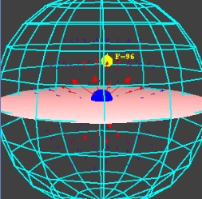
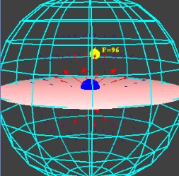
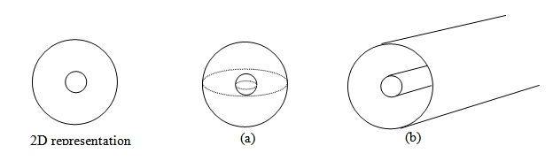

|  |
 |
|  |
|
這個電場和電位的EJS模型顯示了在圓球形和圓柱形的系統中電場與電位的分布。 在這兩種系統中，都有著呈同心圓的帶電面，並且在帶電面外皆為接地。 這項模型會反映一個測試的點電荷（黃色的）在不同的同心圓面之中所受到的力和電壓。 有關EJS的更多資訊可由此獲得: <http://www.um.es/fem/Ejs/>.

假設你現在有一塊呈薄板狀的帶電導體。
那麼你預測它的電場和電位分布會比較接近 (a) 球體 還是 (b) 圓柱? 請解釋。
這項電場與電位的模型 是由 Anne J Cox 所設計 並由 Wolfgang Christian 使用 Easy Java Simulations (EJS) 的編寫和建模工具進行修改。
如果你是透過雙擊一個模型的jar檔來執行程式，你可以檢驗並修改這個已編譯過的 EJS 模組。 在你執行的程式點擊右鍵，在跳出的選單中選取"開啟EJS模組" 並複製一份該EJS模組的XML檔案 當然，你必須先在你的電腦上安裝EJS。
有關EJS的資訊在: <http://www.um.es/fem/Ejs/> 以及 OSP ComPADRE collection <http://www.compadre.org/OSP/>.